<!DOCTYPE lake>
<p data-lake-id="ucb04a179" id="ucb04a179" style="text-align: center">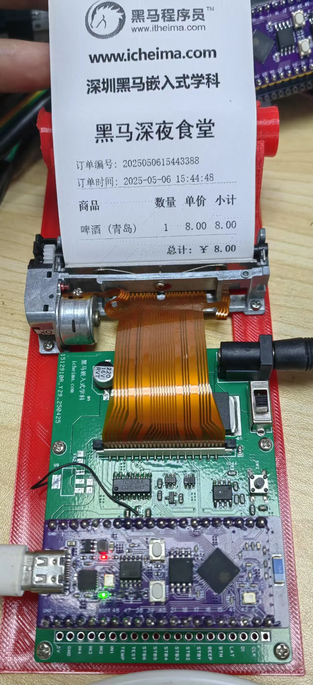</p><p data-lake-id="u3bbbf10b" id="u3bbbf10b" style="text-align: center">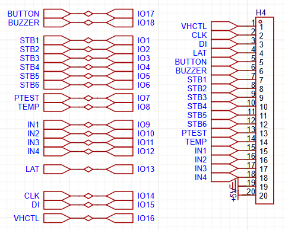</p><p data-lake-id="u1e68457e" id="u1e68457e" style="text-align: center"><span data-lake-id="u5153e2d2" id="u5153e2d2">项目开源地址：</span><a data-lake-id="u646cc84d" href="https://oshwhub.com/kaijun/re-min-da-yin-ji-_1-5" id="u646cc84d" rel="noopener noreferrer" target="_blank"><span data-lake-id="uf3290242" id="uf3290242">https://oshwhub.com/kaijun/re-min-da-yin-ji-_1-5</span></a></p><p data-lake-id="ue5a99199" id="ue5a99199" style="text-align: center"><span data-lake-id="u4268775c" id="u4268775c">c语言版本驱动，请参考：</span><a data-lake-id="u3ca5b9b4" href="../esp-idf/21_%E6%A1%88%E4%BE%8B%EF%BC%9A%E7%83%AD%E6%95%8F%E6%89%93%E5%8D%B0%E6%9C%BA.html" id="u3ca5b9b4"><span data-lake-id="u5610aa5b" id="u5610aa5b">https://www.yuque.com/icheima/fm1kog/evtgsf8x4xlotgr8</span></a></p><h2 data-lake-id="wE0rd" id="wE0rd"><span data-lake-id="u82b17e6e" id="u82b17e6e" style="color: rgb(64, 64, 64)">为什么要学习控制热敏打印机？</span></h2><ol list="ua4873c7e"><li data-lake-id="uc7c7bb40" fid="ue2e427b3" id="uc7c7bb40"><strong><span data-lake-id="u41c0d448" id="u41c0d448" style="color: rgb(64, 64, 64)">嵌入式开发的实践意义</span></strong></li></ol><p data-lake-id="u91f2d640" id="u91f2d640"><span class="lake-fontsize-12" data-lake-id="ue11e2d27" id="ue11e2d27" style="color: rgb(64, 64, 64)">热敏打印机是物联网设备的常见输出模块，例如：</span></p><ul list="udba9a3b5"><li data-lake-id="uc2173100" fid="u4f7b547f" id="uc2173100"><span class="lake-fontsize-12" data-lake-id="ud4033698" id="ud4033698" style="color: rgb(64, 64, 64)">自动售货机打印订单</span></li><li data-lake-id="ubd740ee9" fid="u4f7b547f" id="ubd740ee9"><span class="lake-fontsize-12" data-lake-id="ua5e3a785" id="ua5e3a785" style="color: rgb(64, 64, 64)">智能家居系统的提醒标签</span></li><li data-lake-id="u357bfe5e" fid="u4f7b547f" id="u357bfe5e"><span class="lake-fontsize-12" data-lake-id="u3da92f34" id="u3da92f34" style="color: rgb(64, 64, 64)">工业传感器数据记录<br/></span><span class="lake-fontsize-12" data-lake-id="ufaa31d48" id="ufaa31d48" style="color: rgb(64, 64, 64)">学习控制它，能掌握</span><strong><span class="lake-fontsize-12" data-lake-id="ud206c954" id="ud206c954" style="color: rgb(64, 64, 64)">硬件通信协议</span></strong><span class="lake-fontsize-12" data-lake-id="u637a1070" id="u637a1070" style="color: rgb(64, 64, 64)">（如UART、SPI）和</span><strong><span class="lake-fontsize-12" data-lake-id="uf28ccdfc" id="uf28ccdfc" style="color: rgb(64, 64, 64)">指令集</span></strong><span class="lake-fontsize-12" data-lake-id="u4183ef7e" id="u4183ef7e" style="color: rgb(64, 64, 64)">（如ESC/POS命令）。</span></li></ul><ol list="u5e47e45a" start="2"><li data-lake-id="u3d60898f" fid="u8c258dda" id="u3d60898f"><strong><span data-lake-id="u4aaa3b3b" id="u4aaa3b3b" style="color: rgb(64, 64, 64)">MicroPython 的优势</span></strong></li></ol><ul list="u154f3c71"><li data-lake-id="u188760b4" fid="u22208e8d" id="u188760b4"><strong><span class="lake-fontsize-12" data-lake-id="ua8f70ffe" id="ua8f70ffe" style="color: rgb(64, 64, 64)">快速原型开发</span></strong><span class="lake-fontsize-12" data-lake-id="uacb2e1de" id="uacb2e1de" style="color: rgb(64, 64, 64)">：相比C语言，MicroPython代码更简洁，适合验证逻辑。</span></li><li data-lake-id="u2a3fe2a0" fid="u22208e8d" id="u2a3fe2a0"><strong><span class="lake-fontsize-12" data-lake-id="u15b6617f" id="u15b6617f" style="color: rgb(64, 64, 64)">硬件兼容性</span></strong><span class="lake-fontsize-12" data-lake-id="ua74c97f7" id="ua74c97f7" style="color: rgb(64, 64, 64)">：支持ESP32、树莓派Pico等开发板，可直接驱动打印机模块。</span></li><li data-lake-id="u22f788c9" fid="u22208e8d" id="u22f788c9"><strong><span class="lake-fontsize-12" data-lake-id="udc3939e0" id="udc3939e0" style="color: rgb(64, 64, 64)">教育价值</span></strong><span class="lake-fontsize-12" data-lake-id="u065c345c" id="u065c345c" style="color: rgb(64, 64, 64)">：学习如何将底层硬件操作（如发送字节流、控制针脚）与高级语言结合。</span></li></ul><ol list="ub0a631d4" start="3"><li data-lake-id="u2d13e3f8" fid="uf91db66b" id="u2d13e3f8"><strong><span data-lake-id="ub6d688e6" id="ub6d688e6" style="color: rgb(64, 64, 64)">商业与创客场景需求</span></strong></li></ol><ul list="u38995d11"><li data-lake-id="u21238812" fid="ud9cc425f" id="u21238812"><span class="lake-fontsize-12" data-lake-id="u8b137648" id="u8b137648" style="color: rgb(64, 64, 64)">低成本部署：热敏打印机模块价格低廉（几十元即可入手）。</span></li><li data-lake-id="uc2c03a32" fid="ud9cc425f" id="uc2c03a32"><span class="lake-fontsize-12" data-lake-id="u5604b6ff" id="u5604b6ff" style="color: rgb(64, 64, 64)">创客项目：自制便携式票据打印机、智能称重标签机等。</span></li></ul><h2 data-lake-id="Vb1RH" data-lake-index-type="2" id="Vb1RH"><span data-lake-id="u3eaae8da" id="u3eaae8da">缺纸检测</span></h2><h3 data-lake-id="K9guA" id="K9guA"><span data-lake-id="u04c9ff48" id="u04c9ff48">为什么</span></h3><ol list="u1720733b"><li data-lake-id="ue2957f0a" fid="u50cdd05a" id="ue2957f0a" style="text-align: left"><strong><span class="lake-fontsize-12" data-lake-id="u5e395334" id="u5e395334" style="color: rgba(0, 0, 0, 0.9); background-color: rgb(252, 252, 252)">保证打印完整性</span></strong></li></ol><ul data-lake-indent="1" list="uc49157ee"><li data-lake-id="u24da8348" fid="ua13ab002" id="u24da8348" style="text-align: left"><span class="lake-fontsize-12" data-lake-id="u4e24d442" id="u4e24d442" style="color: rgba(0, 0, 0, 0.9); background-color: rgb(252, 252, 252)">当纸张用完时，打印机会</span><strong><span class="lake-fontsize-12" data-lake-id="ufb596ff2" id="ufb596ff2" style="color: rgba(0, 0, 0, 0.9); background-color: rgb(252, 252, 252)">立即停止工作</span></strong><span class="lake-fontsize-12" data-lake-id="u9e05f68c" id="u9e05f68c" style="color: rgba(0, 0, 0, 0.9); background-color: rgb(252, 252, 252)">并发出提示（声音/灯光），避免打印到一半中断。</span></li><li data-lake-id="u77cce741" fid="ua13ab002" id="u77cce741" style="text-align: left"><span class="lake-fontsize-12" data-lake-id="u2c012031" id="u2c012031" style="color: rgba(0, 0, 0, 0.9); background-color: rgb(252, 252, 252)">比如打印</span><strong><span class="lake-fontsize-12" data-lake-id="u3cc6e147" id="u3cc6e147" style="color: rgba(0, 0, 0, 0.9); background-color: rgb(252, 252, 252)">快递单、小票、标签</span></strong><span class="lake-fontsize-12" data-lake-id="u1177e775" id="u1177e775" style="color: rgba(0, 0, 0, 0.9); background-color: rgb(252, 252, 252)">时，如果缺纸导致信息缺失，可能影响订单处理或客户体验。</span></li></ul><ol list="u1720733b" start="2"><li data-lake-id="ue992f411" fid="u50cdd05a" id="ue992f411" style="text-align: left"><strong><span class="lake-fontsize-12" data-lake-id="u0fa5983d" id="u0fa5983d" style="color: rgba(0, 0, 0, 0.9); background-color: rgb(252, 252, 252)">保护打印头，延长寿命</span></strong></li></ol><ul data-lake-indent="1" list="ud4e631d9"><li data-lake-id="u30f84ed5" fid="uf0755141" id="u30f84ed5" style="text-align: left"><span class="lake-fontsize-12" data-lake-id="ud6263d43" id="ud6263d43" style="color: rgba(0, 0, 0, 0.9); background-color: rgb(252, 252, 252)">热敏打印头需要</span><strong><span class="lake-fontsize-12" data-lake-id="u78ba33e2" id="u78ba33e2" style="color: rgba(0, 0, 0, 0.9); background-color: rgb(252, 252, 252)">接触纸张散热</span></strong><span class="lake-fontsize-12" data-lake-id="u7bdee940" id="u7bdee940" style="color: rgba(0, 0, 0, 0.9); background-color: rgb(252, 252, 252)">，如果缺纸还继续打印：</span></li></ul><ul data-lake-indent="2" list="ud4e631d9"><li data-lake-id="u0ba64c3a" fid="ud2c1e965" id="u0ba64c3a" style="text-align: left"><span class="lake-fontsize-12" data-lake-id="u813015bb" id="u813015bb" style="color: rgba(0, 0, 0, 0.9); background-color: rgb(252, 252, 252)">打印头会直接摩擦滚轴，</span><strong><span class="lake-fontsize-12" data-lake-id="u5a50b5e6" id="u5a50b5e6" style="color: rgba(0, 0, 0, 0.9); background-color: rgb(252, 252, 252)">加速磨损</span></strong><span class="lake-fontsize-12" data-lake-id="u96991793" id="u96991793" style="color: rgba(0, 0, 0, 0.9); background-color: rgb(252, 252, 252)">。</span></li><li data-lake-id="u7888516f" fid="ud2c1e965" id="u7888516f" style="text-align: left"><span class="lake-fontsize-12" data-lake-id="u1ad97a67" id="u1ad97a67" style="color: rgba(0, 0, 0, 0.9); background-color: rgb(252, 252, 252)">长时间空打可能</span><strong><span class="lake-fontsize-12" data-lake-id="u4c97d0ef" id="u4c97d0ef" style="color: rgba(0, 0, 0, 0.9); background-color: rgb(252, 252, 252)">过热损坏</span></strong><span class="lake-fontsize-12" data-lake-id="u15a8589c" id="u15a8589c" style="color: rgba(0, 0, 0, 0.9); background-color: rgb(252, 252, 252)">，维修或更换成本很高。</span></li></ul><ul data-lake-indent="1" list="ud4e631d9" start="2"><li data-lake-id="ufbcd18b5" fid="uf0755141" id="ufbcd18b5" style="text-align: left"><span class="lake-fontsize-12" data-lake-id="u9b760c04" id="u9b760c04" style="color: rgba(0, 0, 0, 0.9); background-color: rgb(252, 252, 252)">缺纸检测能</span><strong><span class="lake-fontsize-12" data-lake-id="u3561df40" id="u3561df40" style="color: rgba(0, 0, 0, 0.9); background-color: rgb(252, 252, 252)">及时停止加热</span></strong><span class="lake-fontsize-12" data-lake-id="u21f6e9eb" id="u21f6e9eb" style="color: rgba(0, 0, 0, 0.9); background-color: rgb(252, 252, 252)">，避免这种损伤。</span></li></ul><ol list="u1720733b" start="3"><li data-lake-id="uebc95d93" fid="u50cdd05a" id="uebc95d93" style="text-align: left"><strong><span class="lake-fontsize-12" data-lake-id="ubea6c315" id="ubea6c315" style="color: rgba(0, 0, 0, 0.9); background-color: rgb(252, 252, 252)">节省耗材，减少浪费</span></strong></li></ol><ul data-lake-indent="1" list="u70bb9de5"><li data-lake-id="u0a039989" fid="uce18e720" id="u0a039989" style="text-align: left"><span class="lake-fontsize-12" data-lake-id="ud8651eb3" id="ud8651eb3" style="color: rgba(0, 0, 0, 0.9); background-color: rgb(252, 252, 252)">如果没有检测功能，打印机可能继续“空打”，浪费电力或导致标签纸错位（连续纸）。</span></li><li data-lake-id="u391212ac" fid="uce18e720" id="u391212ac" style="text-align: left"><span class="lake-fontsize-12" data-lake-id="ud1ebd477" id="ud1ebd477" style="color: rgba(0, 0, 0, 0.9); background-color: rgb(252, 252, 252)">检测到缺纸后，任务会暂停，加纸后</span><strong><span class="lake-fontsize-12" data-lake-id="u72e778e6" id="u72e778e6" style="color: rgba(0, 0, 0, 0.9); background-color: rgb(252, 252, 252)">自动续打</span></strong><span class="lake-fontsize-12" data-lake-id="u7d69ad51" id="u7d69ad51" style="color: rgba(0, 0, 0, 0.9); background-color: rgb(252, 252, 252)">（部分机型支持），不浪费材料。</span></li></ul><ol list="u1720733b" start="4"><li data-lake-id="u6ac1e615" fid="u50cdd05a" id="u6ac1e615" style="text-align: left"><strong><span class="lake-fontsize-12" data-lake-id="u8fdefa41" id="u8fdefa41" style="color: rgba(0, 0, 0, 0.9); background-color: rgb(252, 252, 252)">自动化运行，减少人工干预</span></strong></li></ol><ul data-lake-indent="1" list="u61ae124a"><li data-lake-id="u6eea15cc" fid="ud58ec1ce" id="u6eea15cc" style="text-align: left"><span class="lake-fontsize-12" data-lake-id="u53c5de80" id="u53c5de80" style="color: rgba(0, 0, 0, 0.9); background-color: rgb(252, 252, 252)">在</span><strong><span class="lake-fontsize-12" data-lake-id="uf3700c0b" id="uf3700c0b" style="color: rgba(0, 0, 0, 0.9); background-color: rgb(252, 252, 252)">无人值守设备</span></strong><span class="lake-fontsize-12" data-lake-id="uaa8bff4d" id="uaa8bff4d" style="color: rgba(0, 0, 0, 0.9); background-color: rgb(252, 252, 252)">（如自助取票机、快递柜）中，缺纸检测能：</span></li></ul><ul data-lake-indent="2" list="u61ae124a"><li data-lake-id="ub464e529" fid="u22447bc8" id="ub464e529" style="text-align: left"><span class="lake-fontsize-12" data-lake-id="u23e53278" id="u23e53278" style="color: rgba(0, 0, 0, 0.9); background-color: rgb(252, 252, 252)">触发系统报警，通知工作人员加纸。</span></li><li data-lake-id="uf18c43c2" fid="u22447bc8" id="uf18c43c2" style="text-align: left"><span class="lake-fontsize-12" data-lake-id="u12ea4716" id="u12ea4716" style="color: rgba(0, 0, 0, 0.9); background-color: rgb(252, 252, 252)">联网机型还可通过</span><strong><span class="lake-fontsize-12" data-lake-id="u2ebdaddd" id="u2ebdaddd" style="color: rgba(0, 0, 0, 0.9); background-color: rgb(252, 252, 252)">APP/短信提醒</span></strong><span class="lake-fontsize-12" data-lake-id="u92aed881" id="u92aed881" style="color: rgba(0, 0, 0, 0.9); background-color: rgb(252, 252, 252)">，远程管理。</span></li></ul><p data-lake-id="u8dabd79b" id="u8dabd79b"><br/></p><p data-lake-id="uab8b06b3" id="uab8b06b3"><strong><span class="lake-fontsize-12" data-lake-id="uac6cffcf" id="uac6cffcf" style="color: rgba(0, 0, 0, 0.9); background-color: rgb(252, 252, 252)">实际场景举例</span></strong><span class="lake-fontsize-12" data-lake-id="u295e4947" id="u295e4947" style="color: rgba(0, 0, 0, 0.9); background-color: rgb(252, 252, 252)">：</span></p><ul list="u8ca5947b"><li data-lake-id="u4a706ffb" fid="ub08cc338" id="u4a706ffb" style="text-align: left"><strong><span class="lake-fontsize-12" data-lake-id="u35f4da0b" id="u35f4da0b" style="color: rgba(0, 0, 0, 0.9); background-color: rgb(252, 252, 252)">餐厅小票机</span></strong><span class="lake-fontsize-12" data-lake-id="u97348d4b" id="u97348d4b" style="color: rgba(0, 0, 0, 0.9); background-color: rgb(252, 252, 252)">：避免订单漏打，影响结账效率。</span></li><li data-lake-id="ue5741ab2" fid="ub08cc338" id="ue5741ab2" style="text-align: left"><strong><span class="lake-fontsize-12" data-lake-id="u4ba41443" id="u4ba41443" style="color: rgba(0, 0, 0, 0.9); background-color: rgb(252, 252, 252)">物流标签机</span></strong><span class="lake-fontsize-12" data-lake-id="u4e2a1944" id="u4e2a1944" style="color: rgba(0, 0, 0, 0.9); background-color: rgb(252, 252, 252)">：防止漏印快递单号，导致包裹无法发货。</span></li><li data-lake-id="u55ff27dd" fid="ub08cc338" id="u55ff27dd" style="text-align: left"><strong><span class="lake-fontsize-12" data-lake-id="uc92d5bac" id="uc92d5bac" style="color: rgba(0, 0, 0, 0.9); background-color: rgb(252, 252, 252)">医疗报告打印</span></strong><span class="lake-fontsize-12" data-lake-id="u8f37fb5e" id="u8f37fb5e" style="color: rgba(0, 0, 0, 0.9); background-color: rgb(252, 252, 252)">：确保检查结果完整打印，避免遗漏关键数据。</span></li></ul><p data-lake-id="uab2e95ab" id="uab2e95ab"><strong><span class="lake-fontsize-12" data-lake-id="ud74d63e1" id="ud74d63e1" style="color: rgba(0, 0, 0, 0.9); background-color: rgb(252, 252, 252)">总结</span></strong><span class="lake-fontsize-12" data-lake-id="u3997f7e7" id="u3997f7e7" style="color: rgba(0, 0, 0, 0.9); background-color: rgb(252, 252, 252)">：缺纸检测虽是小功能，但能帮你</span><strong><span class="lake-fontsize-12" data-lake-id="u660c0aee" id="u660c0aee" style="color: rgba(0, 0, 0, 0.9); background-color: rgb(252, 252, 252)">省心、省钱、省时间</span></strong><span class="lake-fontsize-12" data-lake-id="uec79995b" id="uec79995b" style="color: rgba(0, 0, 0, 0.9); background-color: rgb(252, 252, 252)">，是热敏打印机稳定运行的必备保障！</span></p><p data-lake-id="uf3e9acb9" id="uf3e9acb9"><br/></p><p data-lake-id="u3df76c2b" id="u3df76c2b"><span data-lake-id="uce266c29" id="uce266c29">默认情况下缺纸检测引脚上低电平的，当缺纸了，引脚电平会由低变高产生上升沿。我们可以通过边沿检测知道当前是否缺纸</span></p><h3 data-lake-id="jpfMk" id="jpfMk"><span data-lake-id="uc6409067" id="uc6409067">示例代码</span></h3><h4 data-lake-id="IfpOk" data-lake-index-type="2" id="IfpOk"><span data-lake-id="u23156f73" id="u23156f73">导包</span></h4><span class="yuque-card-unsupported">[codeblock]</span><h4 data-lake-id="byhSy" data-lake-index-type="2" id="byhSy"><span data-lake-id="u7150d5ed" id="u7150d5ed">初始化引脚</span></h4><span class="yuque-card-unsupported">[codeblock]</span><h4 data-lake-id="WgYLU" data-lake-index-type="2" id="WgYLU"><span data-lake-id="u5b66bfdb" id="u5b66bfdb">实现判断逻辑</span></h4><span class="yuque-card-unsupported">[codeblock]</span><p data-lake-id="u00aa2d6c" id="u00aa2d6c"><br/></p><h2 data-lake-id="O5ASo" data-lake-index-type="2" id="O5ASo"><span data-lake-id="u8251c39a" id="u8251c39a">打印机温度检测</span></h2><p data-lake-id="u36a0dcee" id="u36a0dcee">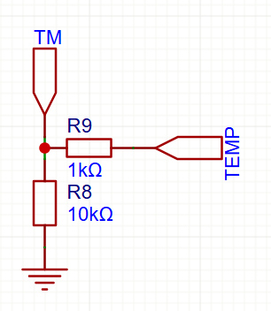</p><h3 data-lake-id="VidJE" id="VidJE"><span data-lake-id="ub9b90147" id="ub9b90147">为什么</span></h3><p data-lake-id="u50a0fb70" id="u50a0fb70"><strong><span class="lake-fontsize-12" data-lake-id="u4584f5eb" id="u4584f5eb" style="color: rgba(0, 0, 0, 0.9); background-color: rgb(252, 252, 252)">热敏打印机温度检测</span></strong><span class="lake-fontsize-12" data-lake-id="ub207e8c2" id="ub207e8c2" style="color: rgba(0, 0, 0, 0.9); background-color: rgb(252, 252, 252)">很重要，因为它直接影响：</span></p><ol list="u0d2ee081"><li data-lake-id="u6eb4b45a" fid="ufb6d7470" id="u6eb4b45a" style="text-align: left"><strong><span class="lake-fontsize-12" data-lake-id="u61416fa6" id="u61416fa6" style="color: rgba(0, 0, 0, 0.9); background-color: rgb(252, 252, 252)">打印效果</span></strong><span class="lake-fontsize-12" data-lake-id="u9f7b1631" id="u9f7b1631" style="color: rgba(0, 0, 0, 0.9); background-color: rgb(252, 252, 252)">——温度太低打印模糊，太高会烧坏纸或打印头。</span></li><li data-lake-id="uc6567b31" fid="ufb6d7470" id="uc6567b31" style="text-align: left"><strong><span class="lake-fontsize-12" data-lake-id="ub9e27fb0" id="ub9e27fb0" style="color: rgba(0, 0, 0, 0.9); background-color: rgb(252, 252, 252)">打印头寿命</span></strong><span class="lake-fontsize-12" data-lake-id="u289a463a" id="u289a463a" style="color: rgba(0, 0, 0, 0.9); background-color: rgb(252, 252, 252)">——温度过高会加速老化，导致缺线或损坏。</span></li><li data-lake-id="u4b77d029" fid="ufb6d7470" id="u4b77d029" style="text-align: left"><strong><span class="lake-fontsize-12" data-lake-id="u9d2667a9" id="u9d2667a9" style="color: rgba(0, 0, 0, 0.9); background-color: rgb(252, 252, 252)">节能省电</span></strong><span class="lake-fontsize-12" data-lake-id="uf80269dc" id="uf80269dc" style="color: rgba(0, 0, 0, 0.9); background-color: rgb(252, 252, 252)">——智能控温可以减少不必要的加热，节省能耗。</span></li><li data-lake-id="ub3e8cad4" fid="ufb6d7470" id="ub3e8cad4" style="text-align: left"><strong><span class="lake-fontsize-12" data-lake-id="u630a91f6" id="u630a91f6" style="color: rgba(0, 0, 0, 0.9); background-color: rgb(252, 252, 252)">安全保护</span></strong><span class="lake-fontsize-12" data-lake-id="u70208990" id="u70208990" style="color: rgba(0, 0, 0, 0.9); background-color: rgb(252, 252, 252)">——防止过热引发故障或烫伤。</span></li><li data-lake-id="u705a57b6" fid="ufb6d7470" id="u705a57b6" style="text-align: left"><strong><span class="lake-fontsize-12" data-lake-id="u06b8aec6" id="u06b8aec6" style="color: rgba(0, 0, 0, 0.9); background-color: rgb(252, 252, 252)">适应不同环境</span></strong><span class="lake-fontsize-12" data-lake-id="u20b7d559" id="u20b7d559" style="color: rgba(0, 0, 0, 0.9); background-color: rgb(252, 252, 252)">——冷热环境自动调节，确保打印稳定。</span></li></ol><p data-lake-id="u161ad8f7" id="u161ad8f7"><span class="lake-fontsize-12" data-lake-id="u44564962" id="u44564962" style="color: rgba(0, 0, 0, 0.9); background-color: rgb(252, 252, 252)">简单说，控制好温度，打印更清晰、机器更耐用、更安全省电！</span></p><p data-lake-id="u09a30128" id="u09a30128"><span data-lake-id="u5a1f0287" id="u5a1f0287">​</span><br/></p><p data-lake-id="ufdae8e3e" id="ufdae8e3e">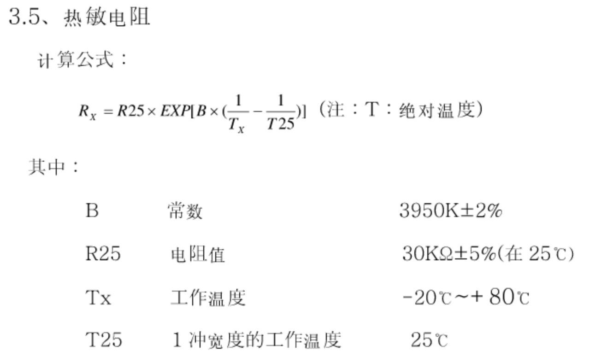</p><p data-lake-id="u30a5e18e" id="u30a5e18e" style="text-align: center">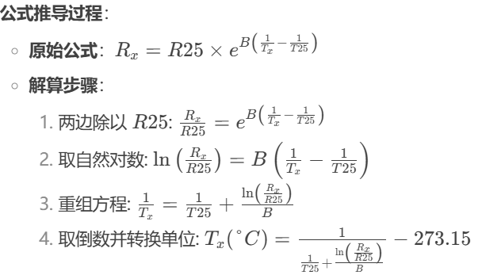</p><h3 data-lake-id="RAVEU" id="RAVEU"><span data-lake-id="u81b0aa73" id="u81b0aa73">示例代码</span></h3><h4 data-lake-id="NGjFK" data-lake-index-type="2" id="NGjFK"><span data-lake-id="u128f0ae1" id="u128f0ae1">导包</span></h4><span class="yuque-card-unsupported">[codeblock]</span><h4 data-lake-id="ZesrX" data-lake-index-type="2" id="ZesrX"><span data-lake-id="u3880dcd1" id="u3880dcd1">实现公式内容</span></h4><span class="yuque-card-unsupported">[codeblock]</span><h4 data-lake-id="ltoac" data-lake-index-type="2" id="ltoac"><span data-lake-id="uf4b5a521" id="uf4b5a521">初始化ADC</span></h4><span class="yuque-card-unsupported">[codeblock]</span><h4 data-lake-id="GUjPY" data-lake-index-type="2" id="GUjPY"><span data-lake-id="u498ab428" id="u498ab428">读取ADC值并换算温度</span></h4><span class="yuque-card-unsupported">[codeblock]</span><p data-lake-id="u17cc5928" id="u17cc5928" style="text-align: center"><br/></p><h2 data-lake-id="B8MKI" data-lake-index-type="2" id="B8MKI"><span data-lake-id="u46c046c8" id="u46c046c8">步进电机驱动</span></h2><p data-lake-id="u245d73ec" id="u245d73ec"><span class="lake-fontsize-12" data-lake-id="uabeba2d3" id="uabeba2d3" style="color: rgba(0, 0, 0, 0.9); background-color: rgb(252, 252, 252)">步进电机是一种</span><strong><span class="lake-fontsize-12" data-lake-id="uaa1570a3" id="uaa1570a3" style="color: rgba(0, 0, 0, 0.9); background-color: rgb(252, 252, 252)">将电脉冲信号转换为精确角度运动</span></strong><span class="lake-fontsize-12" data-lake-id="u472d4f86" id="u472d4f86" style="color: rgba(0, 0, 0, 0.9); background-color: rgb(252, 252, 252)">的电动机，广泛应用于需要</span><strong><span class="lake-fontsize-12" data-lake-id="u7d327612" id="u7d327612" style="color: rgba(0, 0, 0, 0.9); background-color: rgb(252, 252, 252)">精准定位、速度可控</span></strong><span class="lake-fontsize-12" data-lake-id="ub49fd6a9" id="ub49fd6a9" style="color: rgba(0, 0, 0, 0.9); background-color: rgb(252, 252, 252)">的自动化设备中。</span></p><hr/><h3 data-lake-id="D7tSn" id="D7tSn"><span data-lake-id="ueb3054b6" id="ueb3054b6" style="color: rgba(0, 0, 0, 0.9); background-color: rgb(252, 252, 252)">步进电机的基本原理</span></h3><ul list="u81cc0101"><li data-lake-id="u61529f4d" fid="u584b259f" id="u61529f4d" style="text-align: left"><strong><span class="lake-fontsize-12" data-lake-id="u5f220894" id="u5f220894" style="color: rgba(0, 0, 0, 0.9); background-color: rgb(252, 252, 252)">工作原理</span></strong><span class="lake-fontsize-12" data-lake-id="uca3a0860" id="uca3a0860" style="color: rgba(0, 0, 0, 0.9); background-color: rgb(252, 252, 252)">：<br/></span><span class="lake-fontsize-12" data-lake-id="u2bf39130" id="u2bf39130" style="color: rgba(0, 0, 0, 0.9); background-color: rgb(252, 252, 252)">电机接收一个电脉冲信号，转子就转动一个固定角度（称为</span><strong><span class="lake-fontsize-12" data-lake-id="ua50d5b98" id="ua50d5b98" style="color: rgba(0, 0, 0, 0.9); background-color: rgb(252, 252, 252)">步距角</span></strong><span class="lake-fontsize-12" data-lake-id="u4cc645e8" id="u4cc645e8" style="color: rgba(0, 0, 0, 0.9); background-color: rgb(252, 252, 252)">），如1.8°（200步/转）或0.9°（400步/转）。</span></li><li data-lake-id="u814289fd" fid="u584b259f" id="u814289fd" style="text-align: left"><strong><span class="lake-fontsize-12" data-lake-id="uaae82210" id="uaae82210" style="color: rgba(0, 0, 0, 0.9); background-color: rgb(252, 252, 252)">开环控制</span></strong><span class="lake-fontsize-12" data-lake-id="u389b1a60" id="u389b1a60" style="color: rgba(0, 0, 0, 0.9); background-color: rgb(252, 252, 252)">：<br/></span><span class="lake-fontsize-12" data-lake-id="u185e1209" id="u185e1209" style="color: rgba(0, 0, 0, 0.9); background-color: rgb(252, 252, 252)">无需编码器反馈，只要控制脉冲数量，就能精确控制位置和速度。</span></li></ul><p data-lake-id="u7c5b8321" id="u7c5b8321"><br/></p><p data-lake-id="uef9cb71f" id="uef9cb71f">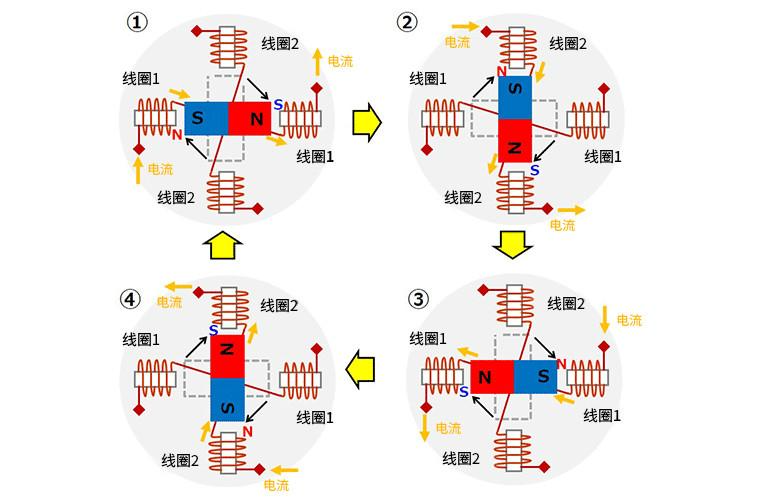</p><p data-lake-id="u92568111" id="u92568111"><span class="lake-fontsize-12" data-lake-id="ub700849d" id="ub700849d" style="color: rgba(0, 0, 0, 0.9); background-color: rgb(252, 252, 252)">电机两组线圈（A+/A-、B+/B-）通过H桥电路实现电流正反向切换，形成旋转磁场。</span></p><p data-lake-id="u93987a29" id="u93987a29"><strong><span data-lake-id="ue86679ba" id="ue86679ba" style="color: rgba(0, 0, 0, 0.9); background-color: rgb(252, 252, 252)">总结</span></strong></p><p data-lake-id="u9bc62a42" id="u9bc62a42"><span class="lake-fontsize-12" data-lake-id="u81ca0f32" id="u81ca0f32" style="color: rgba(0, 0, 0, 0.9); background-color: rgb(252, 252, 252)">步进电机是</span><strong><span class="lake-fontsize-12" data-lake-id="uabbe3281" id="uabbe3281" style="color: rgba(0, 0, 0, 0.9); background-color: rgb(252, 252, 252)">低成本、高精度</span></strong><span class="lake-fontsize-12" data-lake-id="u639fa334" id="u639fa334" style="color: rgba(0, 0, 0, 0.9); background-color: rgb(252, 252, 252)">的运动控制解决方案，适用于需要</span><strong><span class="lake-fontsize-12" data-lake-id="u025cd055" id="u025cd055" style="color: rgba(0, 0, 0, 0.9); background-color: rgb(252, 252, 252)">精准定位</span></strong><span class="lake-fontsize-12" data-lake-id="ub43b44bf" id="ub43b44bf" style="color: rgba(0, 0, 0, 0.9); background-color: rgb(252, 252, 252)">的自动化设备。选择合适的</span><strong><span class="lake-fontsize-12" data-lake-id="ua7a4d229" id="ua7a4d229" style="color: rgba(0, 0, 0, 0.9); background-color: rgb(252, 252, 252)">电机类型+驱动方式</span></strong><span class="lake-fontsize-12" data-lake-id="u074039a1" id="u074039a1" style="color: rgba(0, 0, 0, 0.9); background-color: rgb(252, 252, 252)">，可以大幅提升系统性能！</span></p><p data-lake-id="ub0de9d84" id="ub0de9d84"><span class="lake-fontsize-12" data-lake-id="u919f556f" id="u919f556f" style="color: rgba(0, 0, 0, 0.9); background-color: rgb(252, 252, 252)">​</span><br/></p><h3 data-lake-id="GAedr" id="GAedr"><span data-lake-id="u00b90ee3" id="u00b90ee3" style="color: rgba(0, 0, 0, 0.9); background-color: rgb(252, 252, 252)">打印头上的步进电机</span></h3><p data-lake-id="u585ed22d" id="u585ed22d"><span class="lake-fontsize-12" data-lake-id="ub6b88e94" id="ub6b88e94">打印头上的步进电机主要作用就上控制纸张的移动，每打印完一行，我们需要控制纸张移动一行。</span></p><p data-lake-id="u56796d27" id="u56796d27"><span class="lake-fontsize-12" data-lake-id="u611d915e" id="u611d915e">下面这张表上打印头上步进电机的参数表。</span></p><p data-lake-id="ue69fb853" id="ue69fb853"><span class="lake-fontsize-12" data-lake-id="u77583b89" id="u77583b89" style="color: rgba(0, 0, 0, 0.9); background-color: rgb(252, 252, 252)">​</span><br/></p><p data-lake-id="udc254909" id="udc254909">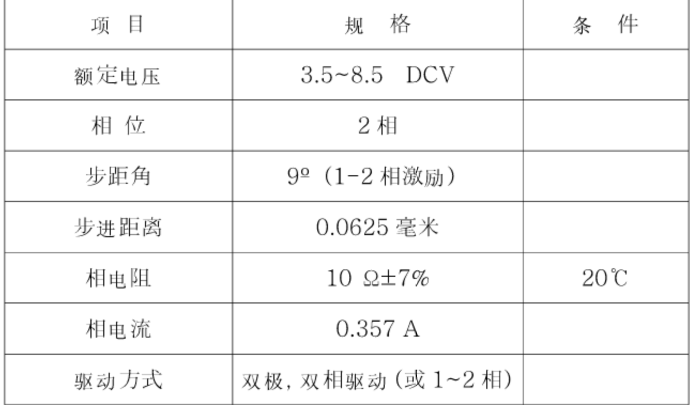</p><p data-lake-id="u63492141" id="u63492141" style="text-indent: 2em">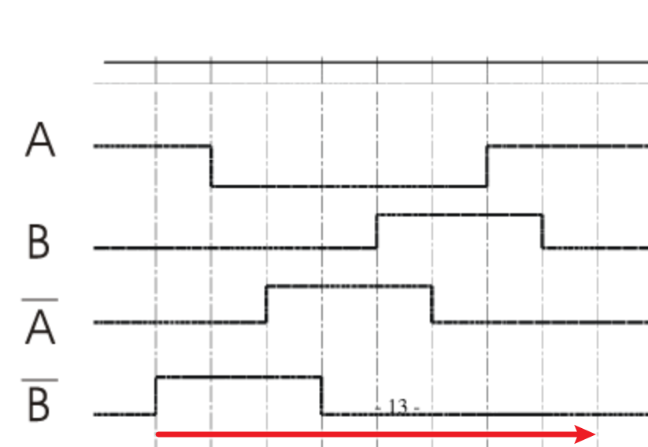</p><span class="yuque-card-unsupported">[codeblock]</span><p data-lake-id="u74f1f5e6" id="u74f1f5e6"><span data-lake-id="uadb53960" id="uadb53960">然后根据表去修改引脚的状态</span></p><span class="yuque-card-unsupported">[codeblock]</span><p data-lake-id="u2adfe0ff" id="u2adfe0ff"></p><p data-lake-id="u1cdcd4e9" id="u1cdcd4e9">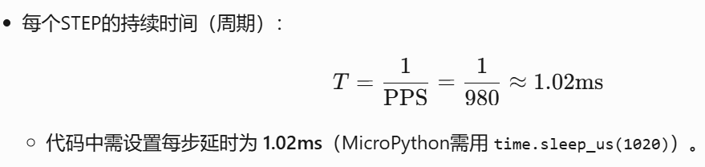</p><p data-lake-id="ubc5fdd53" id="ubc5fdd53"><span data-lake-id="u55e4ba8e" id="u55e4ba8e">每步执行的时间为1.02ms</span></p><span class="yuque-card-unsupported">[codeblock]</span><h3 data-lake-id="gKVpI" id="gKVpI"><span data-lake-id="ufd0e11b4" id="ufd0e11b4">完整实现步骤：</span></h3><h4 data-lake-id="bwdnO" data-lake-index-type="2" id="bwdnO"><span data-lake-id="u8ee596e5" id="u8ee596e5">导包</span></h4><span class="yuque-card-unsupported">[codeblock]</span><h4 data-lake-id="ummY9" data-lake-index-type="2" id="ummY9"><span data-lake-id="ua22ddf7f" id="ua22ddf7f">定义引脚常量</span></h4><span class="yuque-card-unsupported">[codeblock]</span><p data-lake-id="ue260301c" id="ue260301c"><br/></p><h4 data-lake-id="Gxru4" data-lake-index-type="2" id="Gxru4"><span data-lake-id="u1a5c500e" id="u1a5c500e">定义电机时许表</span></h4><span class="yuque-card-unsupported">[codeblock]</span><h4 data-lake-id="QghAh" data-lake-index-type="2" id="QghAh"><span data-lake-id="u0dfc164b" id="u0dfc164b">初始化电机引脚</span></h4><span class="yuque-card-unsupported">[codeblock]</span><h4 data-lake-id="lr7bj" data-lake-index-type="2" id="lr7bj"><span data-lake-id="ufff7c824" id="ufff7c824">实现电机停止功能</span></h4><span class="yuque-card-unsupported">[codeblock]</span><h4 data-lake-id="X5dPZ" data-lake-index-type="2" id="X5dPZ"><span data-lake-id="u79da51e9" id="u79da51e9">实现电机换一步功能</span></h4><span class="yuque-card-unsupported">[codeblock]</span><h4 data-lake-id="I3utq" data-lake-index-type="2" id="I3utq"><span data-lake-id="ua3155128" id="ua3155128">实现电机换N步功能</span></h4><span class="yuque-card-unsupported">[codeblock]</span><p data-lake-id="uf04ef8b0" id="uf04ef8b0"><br/></p><h4 data-lake-id="rkQDI" data-lake-index-type="2" id="rkQDI"><span data-lake-id="u03a87a2a" id="u03a87a2a">实现按钮按下走几步功能</span></h4><span class="yuque-card-unsupported">[codeblock]</span><p data-lake-id="u6f27ad66" id="u6f27ad66"><br/></p><h4 data-lake-id="cYm2m" data-lake-index-type="2" id="cYm2m"><span data-lake-id="u9cfb7fbc" id="u9cfb7fbc">写个测试功能试试</span></h4><span class="yuque-card-unsupported">[codeblock]</span><p data-lake-id="udd0c5d92" id="udd0c5d92"><br/></p><h2 data-lake-id="DR0co" data-lake-index-type="2" id="DR0co"><span data-lake-id="u996ffaec" id="u996ffaec">打印头通信</span></h2><p data-lake-id="ufd2c27a7" id="ufd2c27a7">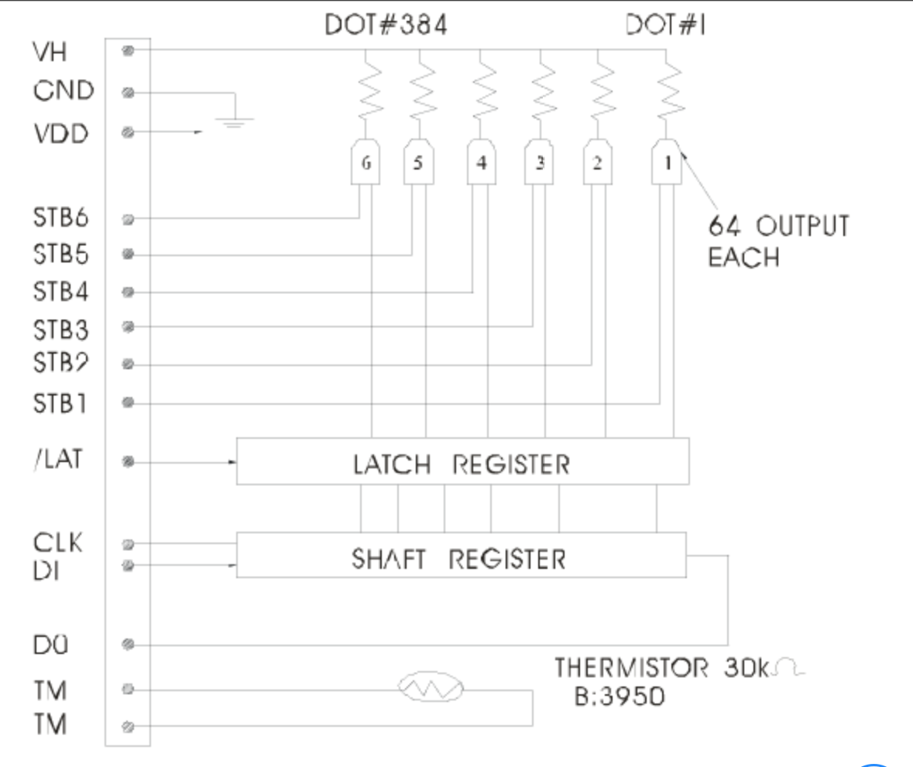</p><p data-lake-id="u8fbe1922" id="u8fbe1922"><br/></p><h3 data-lake-id="O4P7a" data-lake-index-type="2" id="O4P7a"><span data-lake-id="u600ad83d" id="u600ad83d">初始化SPI通信</span></h3><span class="yuque-card-unsupported">[codeblock]</span><p data-lake-id="ua03ad89f" id="ua03ad89f"><br/></p><h3 data-lake-id="ApJ8A" data-lake-index-type="2" id="ApJ8A"><span data-lake-id="u51f91ee7" id="u51f91ee7">数据锁存</span></h3><p data-lake-id="u5ad79709" id="u5ad79709"><br/></p><p data-lake-id="u9c2ac1ea" id="u9c2ac1ea">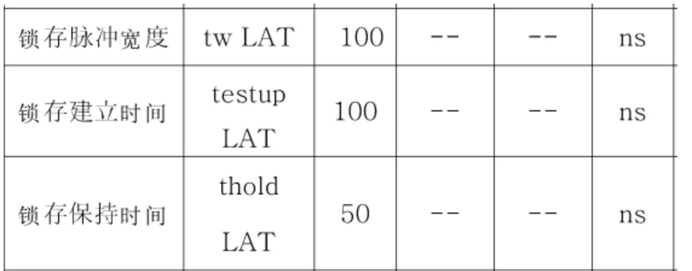</p><p data-lake-id="u61020686" id="u61020686"><span data-lake-id="u7fa35bf7" id="u7fa35bf7">将数据刷出去，即将数据发送到加热头上去打印，从下表可知数据锁存时间大概需要250ns,保险起见我们直接填写</span><strong><span data-lake-id="uc18824fb" id="uc18824fb">1us</span></strong></p><p data-lake-id="uefda8448" id="uefda8448"><span data-lake-id="ua181c183" id="ua181c183">SPI每次将一行数据发送到打印头，锁存器就开始工作1us, 依次将数据刷到打印纸上去</span></p><h4 data-lake-id="zk2KG" data-lake-index-type="2" id="zk2KG"><span data-lake-id="uea76dfbe" id="uea76dfbe">示例代码</span></h4><h5 data-lake-id="dVsPa" data-lake-index-type="2" id="dVsPa"><span data-lake-id="u3297b9a5" id="u3297b9a5">初始化</span></h5><span class="yuque-card-unsupported">[codeblock]</span><span class="yuque-card-unsupported">[codeblock]</span><p data-lake-id="u4144f72f" id="u4144f72f"><br/></p><h2 data-lake-id="whLwb" data-lake-index-type="2" id="whLwb"><span data-lake-id="u2f4a32de" id="u2f4a32de">加热头控制</span>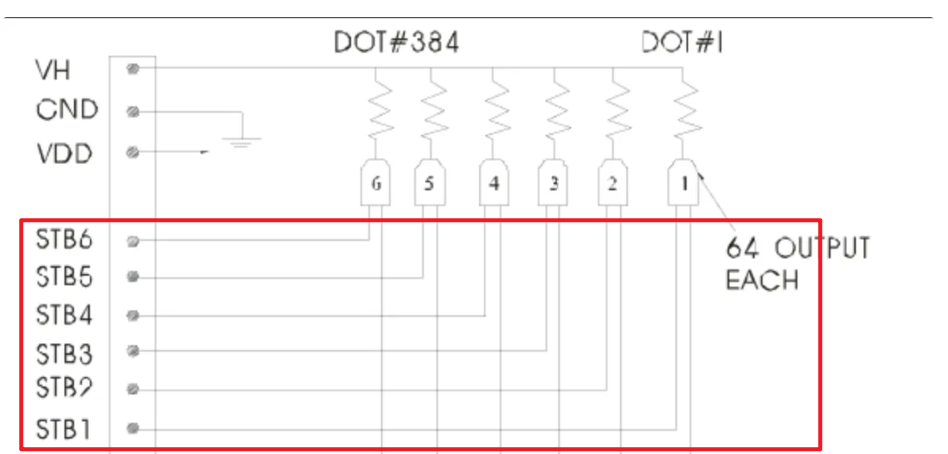</h2><p data-lake-id="ubca5a2b0" id="ubca5a2b0"></p><p data-lake-id="u5af5bc00" id="u5af5bc00"><span data-lake-id="uf47cc590" id="uf47cc590">总共有6个加热头，每行的时间上1.25ms,每个加热头所用的时间大概上1.25ms,加热时间越长颜色越深, 一个加热头处理完成之后，我们再稍微演示10us去处理下一个加热头的额数据</span></p><p data-lake-id="u749ada81" id="u749ada81"><span data-lake-id="u4a7c01f4" id="u4a7c01f4">为了让数据能打印到打印纸上，我们需要依次让6个加热头加热</span></p><h4 data-lake-id="fNZ9L" data-lake-index-type="2" id="fNZ9L"><span data-lake-id="u030f70b9" id="u030f70b9">示例代码</span></h4><h5 data-lake-id="PHESe" data-lake-index-type="2" id="PHESe"><span data-lake-id="ud3b7ef2c" id="ud3b7ef2c">初始化</span></h5><span class="yuque-card-unsupported">[codeblock]</span><h5 data-lake-id="QbPTH" data-lake-index-type="2" id="QbPTH"><span data-lake-id="u09f4aa7b" id="u09f4aa7b">控制加热头</span></h5><span class="yuque-card-unsupported">[codeblock]</span><p data-lake-id="ud29b944c" id="ud29b944c"><br/></p><h2 data-lake-id="RLQgQ" data-lake-index-type="2" id="RLQgQ"><span data-lake-id="u26aca241" id="u26aca241">打印一行数据</span></h2><h3 data-lake-id="egIUi" data-lake-index-type="2" id="egIUi"><span data-lake-id="u969697df" id="u969697df">加热头总开关初始化</span></h3><p data-lake-id="u4566f996" id="u4566f996"><span data-lake-id="u5dc1badb" id="u5dc1badb">只有这个总开关打开，打印机才拥有8.1V供电</span></p><span class="yuque-card-unsupported">[codeblock]</span><h3 data-lake-id="EJlgn" data-lake-index-type="2" id="EJlgn"><span data-lake-id="u81830334" id="u81830334">封装打印一行函数</span></h3><span class="yuque-card-unsupported">[codeblock]</span><h3 data-lake-id="ulaz2" data-lake-index-type="2" id="ulaz2"><span data-lake-id="u895b2a97" id="u895b2a97">准备测试数据</span></h3><span class="yuque-card-unsupported">[codeblock]</span><p data-lake-id="u152a8fb8" id="u152a8fb8"><br/></p><h3 data-lake-id="aOCuE" data-lake-index-type="2" id="aOCuE"><span data-lake-id="u7481f5c9" id="u7481f5c9">测试程序</span></h3><span class="yuque-card-unsupported">[codeblock]</span><p data-lake-id="ud6d4e0d6" id="ud6d4e0d6"><br/></p><h2 data-lake-id="BXgFV" data-lake-index-type="2" id="BXgFV"><span data-lake-id="ufa45935c" id="ufa45935c">打印多行数据</span></h2><span class="yuque-card-unsupported">[codeblock]</span><p data-lake-id="u2aad7e98" id="u2aad7e98"><br/></p><p data-lake-id="u156194c7" id="u156194c7"><br/></p><h2 data-lake-id="GJRy1" id="GJRy1"><span data-lake-id="u9b476452" id="u9b476452">串口收发</span></h2><p data-lake-id="u45a1e052" id="u45a1e052"><span data-lake-id="ud6c77a30" id="ud6c77a30">在本章中，我们需要使用UART0进行数据的收发，而UART0已经在micropython固件中被初始化了，所以我们才能直接使用</span><strong><span data-lake-id="ueac24ed4" id="ueac24ed4">print进行打印</span></strong><span data-lake-id="ue39434f9" id="ue39434f9">。<br/></span><span data-lake-id="u4937072b" id="u4937072b">如果我们想使用UART0进行数据接收的话，我们就只能使用micropython系统中的</span><strong><span data-lake-id="uc8293c19" id="uc8293c19">sys.stdin</span></strong><span data-lake-id="u3feb0cc5" id="u3feb0cc5">进行数据的读取，并且只能接收文本数据</span></p><h3 data-lake-id="LxXUD" data-lake-index-type="2" id="LxXUD"><span data-lake-id="ud0218d92" id="ud0218d92">发送数据</span></h3><span class="yuque-card-unsupported">[codeblock]</span><h3 data-lake-id="HkpiH" data-lake-index-type="2" id="HkpiH"><span data-lake-id="u2f2814a6" id="u2f2814a6">接收数据</span></h3><span class="yuque-card-unsupported">[codeblock]</span><p data-lake-id="u6d0dba9c" id="u6d0dba9c"><br/></p><h3 data-lake-id="XeDKL" data-lake-index-type="2" id="XeDKL"><span data-lake-id="ucf4ac212" id="ucf4ac212">完整收发</span></h3><span class="yuque-card-unsupported">[codeblock]</span><p data-lake-id="ufd145b81" id="ufd145b81"><br/></p><p data-lake-id="ue4a099b2" id="ue4a099b2"><br/></p><h3 data-lake-id="xm3dm" id="xm3dm"><span data-lake-id="ubaf7d2fb" id="ubaf7d2fb">base64编解码</span></h3><p data-lake-id="ud8d4820e" id="ud8d4820e"><span class="lake-fontsize-12" data-lake-id="u94e07cde" id="u94e07cde" style="color: rgb(64, 64, 64)">为什么要学习 </span><strong><span class="lake-fontsize-12" data-lake-id="u1a81f929" id="u1a81f929" style="color: rgb(64, 64, 64)">Base64 编解码</span></strong><span class="lake-fontsize-12" data-lake-id="uf7973850" id="uf7973850" style="color: rgb(64, 64, 64)"> ：</span></p><ol list="u4edb6003"><li data-lake-id="u7dc56d8c" fid="uab89bd4a" id="u7dc56d8c"><strong><span class="lake-fontsize-12" data-lake-id="u83bca21f" id="u83bca21f" style="color: rgb(64, 64, 64)">把二进制变文本</span></strong></li></ol><ul data-lake-indent="1" list="ua6a70eae"><li data-lake-id="ufe08fd91" fid="u56c8ef32" id="ufe08fd91"><span class="lake-fontsize-12" data-lake-id="ua00b676f" id="ua00b676f" style="color: rgb(64, 64, 64)">图片、加密数据等二进制内容，无法直接用文字协议（如HTTP/JSON）传输，Base64 把它们变成字母数字，安全传输。</span></li></ul><ol list="u4edb6003" start="2"><li data-lake-id="ub244ad94" fid="uab89bd4a" id="ub244ad94"><strong><span class="lake-fontsize-12" data-lake-id="ud4298f57" id="ud4298f57" style="color: rgb(64, 64, 64)">躲开特殊符号</span></strong></li></ol><ul data-lake-indent="1" list="u4313c5dd"><li data-lake-id="uf462703e" fid="ueba789d2" id="uf462703e"><span class="lake-fontsize-12" data-lake-id="ued990b7e" id="ued990b7e" style="color: rgb(64, 64, 64)">二进制中的</span><span class="lake-fontsize-12" data-lake-id="ua78ed55b" id="ua78ed55b" style="color: rgb(64, 64, 64)"> </span><code data-lake-id="ue6306622" id="ue6306622"><strong><span class="lake-fontsize-12" data-lake-id="u840391fb" id="u840391fb" style="color: rgb(64, 64, 64); background-color: rgb(236, 236, 236)">\0</span></strong></code><span class="lake-fontsize-12" data-lake-id="u69821538" id="u69821538" style="color: rgb(64, 64, 64)">、</span><code data-lake-id="u2f261f81" id="u2f261f81"><strong><span class="lake-fontsize-12" data-lake-id="ue6e3519e" id="ue6e3519e" style="color: rgb(64, 64, 64); background-color: rgb(236, 236, 236)">&amp;</span></strong></code><span class="lake-fontsize-12" data-lake-id="u4e9d7dae" id="u4e9d7dae" style="color: rgb(64, 64, 64)"> </span><span class="lake-fontsize-12" data-lake-id="u7b98bb84" id="u7b98bb84" style="color: rgb(64, 64, 64)">等符号会破坏代码或协议，Base64 只用</span><span class="lake-fontsize-12" data-lake-id="u219ebb2a" id="u219ebb2a" style="color: rgb(64, 64, 64)"> </span><code data-lake-id="ueda84928" id="ueda84928"><strong><span class="lake-fontsize-12" data-lake-id="uc21814d1" id="uc21814d1" style="color: rgb(64, 64, 64); background-color: rgb(236, 236, 236)">A-Z, a-z, 0-9, +, /</span></strong></code><span class="lake-fontsize-12" data-lake-id="ucc371556" id="ucc371556" style="color: rgb(64, 64, 64)">，避免冲突。</span></li></ul><ol list="u4edb6003" start="3"><li data-lake-id="uc71a54fb" fid="uab89bd4a" id="uc71a54fb"><strong><span class="lake-fontsize-12" data-lake-id="u0fe86792" id="u0fe86792" style="color: rgb(64, 64, 64)">跨系统通用</span></strong></li></ol><ul data-lake-indent="1" list="u0d2b19e0"><li data-lake-id="u21f27855" fid="uebced0ab" id="u21f27855"><span class="lake-fontsize-12" data-lake-id="uc5900ded" id="uc5900ded" style="color: rgb(64, 64, 64)">所有编程语言都支持，编码结果一致，适合不同系统交换数据。</span></li></ul><ol list="u4edb6003" start="4"><li data-lake-id="u5a404259" fid="uab89bd4a" id="u5a404259"><strong><span class="lake-fontsize-12" data-lake-id="u929b4113" id="u929b4113" style="color: rgb(64, 64, 64)">轻度隐藏数据</span></strong><span class="lake-fontsize-12" data-lake-id="ue42b0c09" id="ue42b0c09" style="color: rgb(64, 64, 64)">（非加密！）</span></li></ol><ul data-lake-indent="1" list="ue84f1a2b"><li data-lake-id="u4e169e62" fid="ubba3ee84" id="u4e169e62"><span class="lake-fontsize-12" data-lake-id="u7a295ea6" id="u7a295ea6" style="color: rgb(64, 64, 64)">让数据肉眼不可读，但解码容易，</span><strong><span class="lake-fontsize-12" data-lake-id="ud2382cb1" id="ud2382cb1" style="color: rgb(64, 64, 64)">敏感数据仍需加密</span></strong><span class="lake-fontsize-12" data-lake-id="u34e9a8cb" id="u34e9a8cb" style="color: rgb(64, 64, 64)">。</span></li></ul><p data-lake-id="uc8e2cfd4" id="uc8e2cfd4"><strong><span class="lake-fontsize-12" data-lake-id="u273b3cdc" id="u273b3cdc" style="color: rgb(64, 64, 64)">一句话总结</span></strong><span class="lake-fontsize-12" data-lake-id="ud5dcbc8e" id="ud5dcbc8e" style="color: rgb(64, 64, 64)">：<br/></span><span class="lake-fontsize-12" data-lake-id="u40d76a33" id="u40d76a33" style="color: rgb(64, 64, 64)">Base64 是二进制和文本之间的“翻译器”，解决二进制数据在文本世界中的传输和存储问题。</span></p><p data-lake-id="u2cf558d6" id="u2cf558d6"><span class="lake-fontsize-12" data-lake-id="u8e47624c" id="u8e47624c" style="color: rgb(64, 64, 64)">在本章案例中，由于我们的串口0已经被系统占用了，它只接收文本数据，所以我们需要将上位机的发送过来的字节数组，先转成文本再进行传输。</span></p><h4 data-lake-id="EfaqP" id="EfaqP"><span data-lake-id="uc72b67a4" id="uc72b67a4">PC端示例</span></h4><span class="yuque-card-unsupported">[codeblock]</span><h4 data-lake-id="ZhlFY" id="ZhlFY"><span data-lake-id="u2819afca" id="u2819afca">micropython端示例</span></h4><span class="yuque-card-unsupported">[codeblock]</span><p data-lake-id="u2b20e6dd" id="u2b20e6dd" style="text-align: center"><br/></p><p data-lake-id="u83444ce6" id="u83444ce6"><br/></p><h2 data-lake-id="iJ671" id="iJ671"><span data-lake-id="udb879338" id="udb879338">完整打印机代码</span></h2><span class="yuque-card-unsupported">[codeblock]</span><p data-lake-id="uca3e3e6a" id="uca3e3e6a"><br/></p><p data-lake-id="u89fcbfeb" id="u89fcbfeb"><br/></p><p data-lake-id="u7247b988" id="u7247b988"><span class="lake-fontsize-12" data-lake-id="udad2946a" id="udad2946a">本项目电路部分参考喵喵机：</span><a data-lake-id="ua740885e" href="https://oshwhub.com/SakuraNeko/mao-re-min-da-yin-ji" id="ua740885e" rel="noopener noreferrer" target="_blank"><span class="lake-fontsize-12" data-lake-id="ub7763af6" id="ub7763af6">https://oshwhub.com/SakuraNeko/mao-re-min-da-yin-ji</span></a></p>